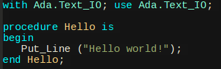

-
COBOL
COBOL, que toma su nombre de “Common Business-Oriented Language”. Entre los que diseñaron este
lenguaje está Grace Hopper, una de las primeras mujeres en el ámbito del cómputo y la que acuñó
la palabra “bug” cuando halló que en un circuito de la computadora donde trabajaba, no funcionaba
porque había un insecto muerto que de alguna manera provocaba una dificultad. COBOL se usó entre
los años 1960 y 1980 y muchísimas empresas, como los bancos, lo usaban sistemáticamente.
A pesar de que se escucha poco de este lenguaje, hay una muy buena cantidad de código que bien se puede seguir usando.
-
ALGOL
ALGOL , lenguaje de programación cuyo nombre es un acrónimo formado a partir de las siglas en
inglés de ALGorithmic Oriented Language. Aunque no tuvo mucho éxito comercial es muy importante
en la historia de la informática ya que tuvo una gran influencia en la mayoría de los lenguajes
de programación posteriores como Pascal, C y ADA.
Actualmente todavia es usado por universidades como introduccion a la programacion, ya que su sintaxis
es facil ademas de que es muy entendible y parecida al lenguaje natural.
-
ADA
ADA, por su parte, es un lenguaje creado en los años 80s y su nombre es en honor a la quien
dicen es la primera programadora mujer, Ada Lovelace, que ayudó al desarrollo de la máquina
analítica de Babbage. Su inventor es Jean Ichbian y fue muy usado en el control de tráfico aéreo
y en la milicia.
